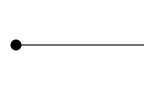
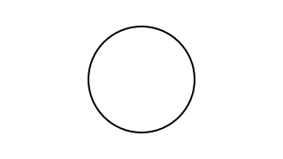
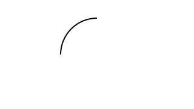

| Copyright | Written by David Himmelstrup |
|---|---|
| License | Unlicense |
| Maintainer | lemmih@gmail.com |
| Stability | experimental |
| Portability | POSIX |
| Safe Haskell | None |
| Language | Haskell2010 |
Reanimate.Animation
Description
Declarative animation API based on combinators. For a higher-level interface,
see Scene.
Synopsis
- type Duration = Double
- type Time = Double
- type SVG = Tree
- data Animation
- mkAnimation :: Duration -> (Time -> SVG) -> Animation
- animate :: (Time -> SVG) -> Animation
- staticFrame :: Duration -> SVG -> Animation
- pause :: Duration -> Animation
- duration :: Animation -> Duration
- frameAt :: Time -> Animation -> SVG
- seqA :: Animation -> Animation -> Animation
- andThen :: Animation -> Animation -> Animation
- parA :: Animation -> Animation -> Animation
- parLoopA :: Animation -> Animation -> Animation
- parDropA :: Animation -> Animation -> Animation
- setDuration :: Duration -> Animation -> Animation
- adjustDuration :: (Duration -> Duration) -> Animation -> Animation
- mapA :: (SVG -> SVG) -> Animation -> Animation
- takeA :: Duration -> Animation -> Animation
- dropA :: Duration -> Animation -> Animation
- lastA :: Duration -> Animation -> Animation
- pauseAtEnd :: Duration -> Animation -> Animation
- pauseAtBeginning :: Duration -> Animation -> Animation
- pauseAround :: Duration -> Duration -> Animation -> Animation
- repeatA :: Double -> Animation -> Animation
- reverseA :: Animation -> Animation
- playThenReverseA :: Animation -> Animation
- signalA :: Signal -> Animation -> Animation
- freezeAtPercentage :: Time -> Animation -> Animation
- addStatic :: SVG -> Animation -> Animation
- getAnimationFrame :: Sync -> Animation -> Time -> Duration -> SVG
- data Sync
- renderTree :: SVG -> String
- renderSvg :: Maybe Number -> Maybe Number -> SVG -> String
Documentation
Creating animations
mkAnimation :: Duration -> (Time -> SVG) -> Animation Source #
Construct an animation with a given duration.
staticFrame :: Duration -> SVG -> Animation Source #
Create an animation with provided duration, which consists of stationary frame displayed for its entire duration.
Querying animations
frameAt :: Time -> Animation -> SVG Source #
Calculate the frame that would be displayed at given point in time of running animation.
The provided time parameter is clamped between 0 and animation duration.
Composing animations
seqA :: Animation -> Animation -> Animation Source #
Play animations in sequence. The lhs animation is removed after it has
completed. New animation duration is 'duration lhs + duration rhs'.
Example:
drawBox`seqA`drawCircle

andThen :: Animation -> Animation -> Animation Source #
Play left animation and freeze on the last frame, then play the right
animation. New duration is 'duration lhs + duration rhs'.
Example:
drawBox`andThen`drawCircle
parA :: Animation -> Animation -> Animation Source #
Play two animation concurrently. Shortest animation freezes on last frame.
New animation duration is 'max (duration lhs) (duration rhs)'.
Example:
drawBox`parA`adjustDuration(*2)drawCircle

parLoopA :: Animation -> Animation -> Animation Source #
Play two animation concurrently. Shortest animation loops.
New animation duration is 'max (duration lhs) (duration rhs)'.
Example:
drawBox`parLoopA`adjustDuration(*2)drawCircle

parDropA :: Animation -> Animation -> Animation Source #
Play two animation concurrently. Animations disappear after playing once.
New animation duration is 'max (duration lhs) (duration rhs)'.
Example:
drawBox`parDropA`adjustDuration(*2)drawCircle

Modifying animations
setDuration :: Duration -> Animation -> Animation Source #
Set the duration of an animation by adjusting its playback rate. The animation is still played from start to finish without being cropped.
adjustDuration :: (Duration -> Duration) -> Animation -> Animation Source #
Change the duration of an animation. Animates are stretched or squished (rather than truncated) to fit the new duration.
takeA :: Duration -> Animation -> Animation Source #
takeA duration animation creates a new animation consisting of initial segment of
animation of given duration, played at the same rate as the original animation.
The duration parameter is clamped to be between 0 and animation's duration.
New animation duration is equal to (eventually clamped) duration.
dropA :: Duration -> Animation -> Animation Source #
dropA duration animation creates a new animation by dropping initial segment
of length duration from the provided animation, played at the same rate as the original animation.
The duration parameter is clamped to be between 0 and animation's duration.
The duration of the resulting animation is duration of provided animation minus (eventually clamped) duration.
lastA :: Duration -> Animation -> Animation Source #
lastA duration animation return the last duration seconds of the animation.

pauseAtBeginning :: Duration -> Animation -> Animation Source #
Freeze the first frame for t seconds at the beginning of the animation.
Example:
pauseAtBeginning1drawProgress

pauseAround :: Duration -> Duration -> Animation -> Animation Source #
Freeze the first and the last frame of the animation for a specified duration.
Example:
pauseAround1 1drawProgress

repeatA :: Double -> Animation -> Animation Source #
Loop animation n number of times. This number may be fractional and it
may be less than 1. It must be greater than or equal to 0, though.
New duration is n*duration input.
Example:
repeatA1.5drawCircle

reverseA :: Animation -> Animation Source #
Play an animation in reverse. Duration remains unchanged. Shorthand for:
signalA reverseS
Example:
reverseAdrawCircle

playThenReverseA :: Animation -> Animation Source #
Play animation before playing it again in reverse. Duration is twice the duration of the input.
Example:
playThenReverseAdrawCircle
signalA :: Signal -> Animation -> Animation Source #
Modify the time component of an animation. Animation duration is unchanged.
Example:
signalA(fromToS0.25 0.75)drawCircle

Arguments
| :: Time | value between 0 and 1. The frame displayed at this point in the original animation will be displayed for the duration of the new animation |
| -> Animation | original animation, from which the frame will be taken |
| -> Animation | new animation consisting of static frame displayed for the duration of the original animation |
freezeAtPercentage time animation creates an animation consisting of stationary frame,
that would be displayed in the provided animation at given time.
The duration of the new animation is the same as the duration of provided animation.
addStatic :: SVG -> Animation -> Animation Source #
Overlay animation on top of static SVG image.
Example:
addStatic(mkBackground"lightblue")drawCircle

Misc
getAnimationFrame :: Sync -> Animation -> Time -> Duration -> SVG Source #
Ask for an animation frame using a given synchronization policy.
Animation synchronization policies.
Constructors
| SyncStretch | |
| SyncLoop | |
| SyncDrop | |
| SyncFreeze |
Rendering
renderTree :: SVG -> String Source #
Helper function for pretty-printing SVG nodes.
Arguments
| :: Maybe Number | The number to use as value of the |
| -> Maybe Number | Similar to previous argument, but for |
| -> SVG | SVG to render |
| -> String | String representation of SVG XML markup |
Helper function for pretty-printing SVG nodes as SVG documents.